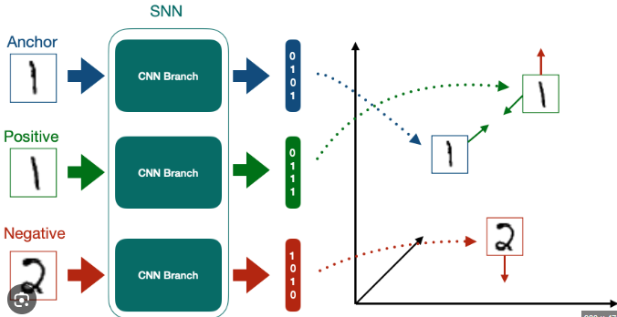

Contents
Siamese Network#
A Siamese Network is a deep learning architecture designed to learn similarity or distance between two inputs, rather than to classify a single input directly.
It’s most useful when you want to answer questions like:
“Are these two images/texts/speech samples the same or similar?”
Intuition#
Imagine you want a model that recognizes whether two face images belong to the same person. A regular classifier would require one class for every person — impossible for new faces.
A Siamese Network instead learns to measure similarity between any two samples. It doesn’t predict what something is, but how alike two things are.
Architecture Overview#
A Siamese Network has two (or more) identical subnetworks that share weights.

Input A → [Network f(·)] → Embedding A
↓
Distance → Output (similar / dissimilar)
↑
Input B → [Network f(·)] → Embedding B
Both subnetworks are identical copies — same architecture and parameters.
Each input passes through one copy to get a feature embedding.
A distance metric (e.g., Euclidean or cosine distance) compares the embeddings.
The final output measures how close or different the two inputs are.
Workflow#
Input Pairs#
Prepare pairs of data:
Positive pairs → same class (e.g., same person, same document)
Negative pairs → different class
Example:
(Image of Person A, Image of Person A) → Label 1
(Image of Person A, Image of Person B) → Label 0
Feature Extraction (Twin Networks)#
Each input passes through the same neural network (e.g., CNN for images, LSTM for text): $\( h_1 = f(x_1), \quad h_2 = f(x_2) \)$
These are embeddings representing each input in feature space.
Similarity Computation#
Compute a distance metric between the two embeddings: $\( D(h_1, h_2) = |h_1 - h_2| \)\( or \)\( \text{Cosine similarity}(h_1, h_2) = \frac{h_1 \cdot h_2}{|h_1||h_2|} \)$
Loss Function#
The loss encourages similar pairs to have small distances and dissimilar pairs to have large ones.
Common losses:#
Contrastive Loss $\( L = (1 - y)\frac{1}{2}D^2 + (y)\frac{1}{2}\max(0, m - D)^2 \)$ where:
(y = 0) for similar, (1) for dissimilar
(m) = margin (distance threshold)
Triplet Loss (for 3 inputs) $\( L = \max(0, D_{anchor, positive} - D_{anchor, negative} + \text{margin}) \)$ Used in face recognition networks like FaceNet.
Example Applications#
Domain |
Example |
Goal |
|---|---|---|
Face Recognition |
FaceNet, DeepFace |
Verify if two faces belong to the same person |
Signature Verification |
Handwritten signatures |
Check authenticity |
Text Similarity |
Sentence embeddings |
Find paraphrases or semantic similarity |
Medical Imaging |
Compare scans |
Detect patient similarity or anomaly |
Recommender Systems |
Product embeddings |
Suggest similar products |
Example (Image Similarity)#
Step 1. Inputs#
Two face images → A & B.
Step 2. Embedding#
Each passes through the same CNN (e.g., ResNet).
Step 3. Distance#
Compute Euclidean distance between embeddings.
Step 4. Output#
If distance < threshold → “Same person.” Else → “Different person.”
Why It Works#
Siamese networks don’t memorize labels — they learn relationships. Once trained, you can compare any new pair without retraining, because the network maps every input into a shared embedding space.
Advantages#
Works well with limited data (pairwise training).
Handles open-set problems (new unseen classes).
Learns generalizable similarity metrics.
Requires fewer parameters (shared weights).
Disadvantages#
Pair/triplet data generation can be expensive.
Training can be unstable if sampling isn’t balanced.
Choosing an appropriate distance threshold is tricky.
Example Equation Summary#
Would you like me to demonstrate a Siamese Network in PyTorch using MNIST (digit similarity)? It clearly shows how two digits are judged as same or different.